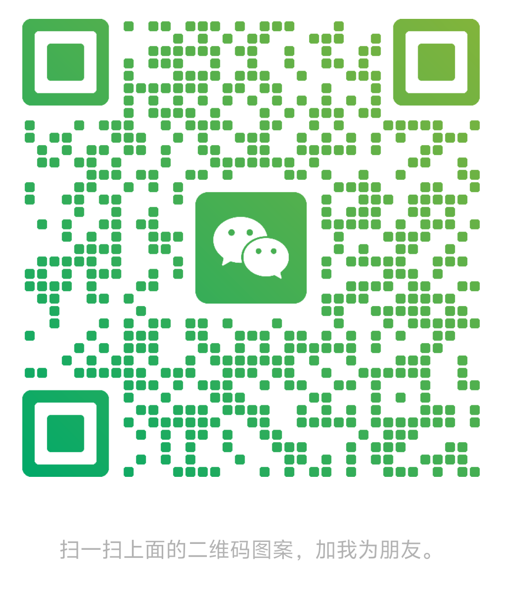

关于我
你好！我是一名对游戏设计与软件开发充满热情的应届毕业生。我拥有超过一万小时的多元游戏经验（策略、RPG、MOBA 等），这不仅培养了我对游戏的热爱，更锻炼了我深度拆解和分析游戏系统的能力，尤其擅长从核心循环、养成梯度、经济模型及玩家心理层面进行研究。
同时，作为软件技术专业的学生，我具备扎实的全栈开发基础，熟练掌握 Java (Spring Boot)、前端技术 (Vue.js, Electron, H5/CSS/JS) 以及 Python 等，并拥有完整的项目开发经验（如独立完成的类微信 IM 应用）。我热衷于用技术验证设计想法，例如使用 UE5 进行关卡原型设计，或利用 Python 进行玩家社群数据分析。
我具备优秀的逻辑思维、问题解决、快速学习和文档撰写能力。无论是进行游戏系统/关卡/技术策划，还是从事前端/后端/全栈开发，或是提供 IT 技术支持，我都渴望能将我的分析能力、技术实践和持续学习的热情结合起来，为团队创造价值。我目前离校，期待能尽快加入一个专业的团队，在实战中不断成长。
专业技能
项目与实践经验
游戏系统深度拆解与分析 (以《明日方舟》为例)
长期实践 (5400+ 小时投入)实践描述: 作为深度玩家，系统性地拆解《明日方舟》的核心循环（挑战-资源-养成）、养成系统（材料梯度、基建）、经济模型及付费设计（用户分层策略）。
关键行动与成果:
- 分析“理智”系统对游戏节奏的调控及玩家“资源焦虑”的产生机制。
- 利用 Python 爬取并分析近万条玩家社区评论，结合 Excel 建立情感分析模型，量化验证玩家痛点与爽点。
- 总结零氪、月卡、重氪玩家的转化与留存策略，理解二次元用户的付费心理。
- 收获: 形成了对塔防+养成类游戏设计的系统性认知，验证了数据分析在挖掘玩家需求中的价值，提升了从玩家与设计者双重视角审视游戏的能力。
毕业设计: 类微信 PC 端应用 (IM 应用)
2023/03 - 2025/01项目描述: 独立开发一款仿微信功能的即时通讯桌面客户端。经历了技术选型调整与架构迭代，最终交付包含用户管理、好友关系、实时消息、文件传输等 18 个核心模块的系统 (约 1.2 万行代码)。
主要职责与贡献:
- 承担全栈开发与系统架构设计，负责前后端搭建、数据库设计。
- 基于 Vue.js 进行前端组件化开发，使用 Electron 构建跨平台桌面应用。
- 使用 Spring Boot 构建后端 RESTful API 服务，处理业务逻辑与数据持久化。
- 攻克 WebSocket 实时消息推送稳定性难题。
- 主导技术架构迭代，展现技术判断力、解决复杂问题的能力和项目管理潜力。
- 使用 Git 进行版本控制，了解 Jenkins 自动化部署流程。
项目收获: 深入掌握了 Vue.js 全家桶及 Electron 应用开发；熟练运用 Java Spring Boot 进行后端开发；全面理解了软件开发生命周期，提升了全栈开发、架构设计和复杂问题解决能力。
游戏关卡原型设计与验证 (塔防游戏分析)
个人实践实践描述: 针对某塔防游戏通过率异常低的关卡 (42%)，怀疑关卡节奏或数值设计存在问题。
关键行动与成果:
- 使用 UE5 快速搭建关卡部分场景的白盒原型。
- 通过蓝图调整敌人波次节奏、增加假定技能等参数。
- 进行简单的调整前后对比测试，初步验证调整方案（如“缩短前两波间隔+增加初期范围技能”）对理论通过率的提升效果。
- 收获: 展现了利用游戏引擎进行快速原型设计和迭代验证的能力，证明了将分析洞察转化为可行设计方案的潜力。
教育背景
汕头职业技术学院
专业: 软件技术
学历: 大专
时间: 2022/09 - 2025/06 (应届)
资格证书
- 全国计算机等级一级
- 全国计算机等级二级 (MS Office 高级应用)
- 网页制作员 (Web 初级)
- 程序员
- 电工中级
- 电工特种作业操作证
找到我
期待与您进一步交流！您可以通过以下方式联系我或了解更多：
- 15526312845
- ucxx66@163.com
-
G16689683054
 微信扫码联系我
- GitHub (待补充)